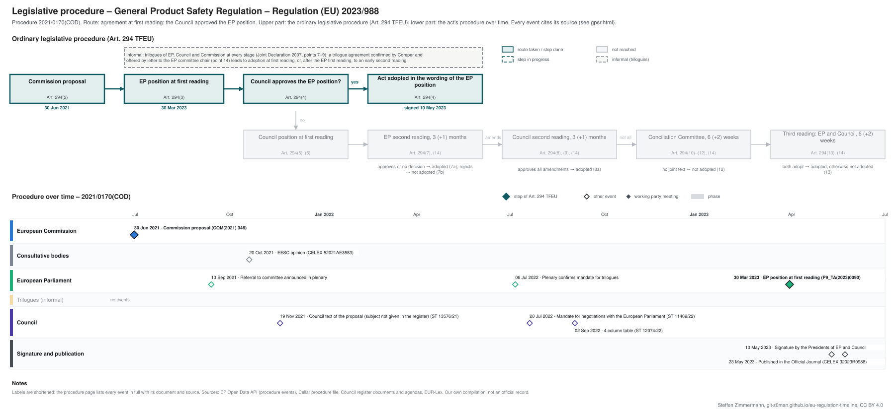

← Regulation timeline › GPSR › Legislative procedure · All procedures
Procedure 2021/0170(COD), completed. Drawing: SVG · PNG · PDF (A3) · draw.io · Page as Markdown: gpsr.md
| Stage | Completed, published 23 May 2023 |
|---|---|
| Route (Art. 294 TFEU) | Agreement at first reading: the Council approved the EP position |
| Latest activity | 23 May 2023 · Signature and publication: Published in the Official Journal (CELEX 32023R0988) |

| Date | Actor | Event | Document | Source |
|---|---|---|---|---|
| 30 Jun 2021 | European Commission | Commission proposal (Art. 294(2) TFEU) | COM(2021) 346 | Cellar procedure file 2021/170 (CELEX 52021PC0346) |
| 13 Sep 2021 | European Parliament | Referral to committee announced in plenary | EP procedure file | EP Open Data API, procedure 2021-0170 (REFERRAL) |
| 20 Oct 2021 | Consultative bodies | EESC opinion | CELEX 52021AE3583 | Cellar procedure file 2021/170 |
| 19 Nov 2021 | Council | Council text of the proposal (subject not given in the register) | ST 13576/21 | Cellar procedure file 2021/170 (Council register) |
| 6 Jul 2022 | European Parliament | Plenary confirms mandate for trilogues | EP procedure file | EP Open Data API, procedure 2021-0170 (PLENARY_ENDORSE_COMMITTEE_INTERINSTITUTIONAL_NEGOTIATIONS) |
| 20 Jul 2022 | Council | Mandate for negotiations with the European Parliament | ST 11469/22 | Cellar procedure file 2021/170 (Council register) |
| 2 Sep 2022 | Council | 4 column table | ST 12074/22 | Cellar procedure file 2021/170 (Council register) |
| 30 Mar 2023 | European Parliament | EP position at first reading (Art. 294(3) TFEU) | P9_TA(2023)0090 | EP Open Data API, procedure 2021-0170 (PLENARY_AMEND_PROPOSAL) |
| 10 May 2023 | Signature and publication | Signature by the Presidents of EP and Council | EP procedure file | EP Open Data API, procedure 2021-0170 (SIGNATURE) |
| 23 May 2023 | Signature and publication | Published in the Official Journal | CELEX 32023R0988 · en.md de.md | EP Open Data API, procedure 2021-0170 (PUBLICATION_OFFICIAL_JOURNAL) |
Every document the Council register, the EU database of the Parliament of Austria or the EP lists for the procedure, with its state: public documents link to the official file; documents that are not public link to their entry in the Austrian database where there is one (metadata only). Status: public; not public; not public, leak available (an unofficial copy is known to circulate outside the institutions; it is neither published nor quoted here). Released: when a document listed as not public was released, by the date of the Council's public PDF (a technical date) or else the day our daily check found it public.
| Date | Document | Kind | Subject | Status | Released | Text |
|---|---|---|---|---|---|---|
| 1 Jul 2021 | ST 10381/21 ADD 1 | council-transmission | ANNEX to the Proposal for a Regulation of the European Parliament and of the Council on general product safety, amending Regulation (EU) No 1025/2012 of the … | public status unknown | – | – |
| 1 Jul 2021 | ST 10381/21 ADD 1 COR 1 | council-transmission | ANNEX to the Proposal for a Regulation of the European Parliament and of the Council on general product safety, amending Regulation (EU) No 1025/2012 of the … | public status unknown | – | – |
| 1 Jul 2021 | ST 10381/21 ADD 2 | council-transmission | COMMISSION STAFF WORKING DOCUMENT IMPACT ASSESSMENT Accompanying the document Proposal for a Regulation of the European Parliament and of the Council on … | public status unknown | – | – |
| 1 Jul 2021 | ST 10381/21 ADD 3 | council-transmission | COMMISSION STAFF WORKING DOCUMENT EXECUTIVE SUMMARY OF THE IMPACT ASSESSMENT REPORT Accompanying the document Proposal for a Regulation of the European … | public status unknown | – | – |
| 1 Jul 2021 | ST 10381/21 COR 1 | council-transmission | Proposal for a REGULATION OF THE EUROPEAN PARLIAMENT AND OF THE COUNCIL on general product safety, amending Regulation (EU) No 1025/2012 of the European … | public status unknown | – | – |
| 5 Jul 2021 | ST 10381/21 ADD 4 | council-transmission | Regulatory Scrutiny Board Opinion: Impact assesment/Revision of the General Product Safety (Directive 2001/95/EC) | public status unknown | – | – |
| 25 Aug 2021 | ST 11384/21 | council-transmission | Formal comments of the European Data Protection Supervisor on the Proposal for a Regulation on general product safety, amending Regulation (EU) No 1025/2012 of … | public status unknown | – | – |
| 6 Sep 2021 | ST 11580/21 | council-transmission | Formal comments of the European Data Protection Supervisor on the Proposal for a Regulation on general product safety, amending Regulation (EU) No 1025/2012 of … | public status unknown | – | – |
| 4 Oct 2021 | ST 12475/21 | council-note | List of working papers (WK) distributed in the Working Party on Consumer Protection and Information in the third quarter of 2021 | public status unknown | – | – |
| 4 Oct 2021 | ST 12477/21 | council-note | List of working papers (WK) distributed in the Working Party on Consumer Protection and Information (Attachés) in the third quarter of 2021 | public status unknown | – | – |
| 4 Oct 2021 | ST 12480/21 | council-note | List of working papers (WK) distributed in the Working Party on Consumer Protection and Information (Consumer Credits) in the third quarter of 2021 | public status unknown | – | – |
| 20 Oct 2021 | CELEX 52021AE3583 | opinion | Opinion of the European Economic and Social Committee on the proposal for a Regulation of the European Parliament and of the Council on general product safety, … | public | – | – |
| 19 Nov 2021 | ST 13576/21 | council-text | Proposal for a REGULATION OF THE EUROPEAN PARLIAMENT AND OF THE COUNCIL on general product safety, amending Regulation (EU) No 1025/2012 of the European … | public | – | – |
| 19 Nov 2021 | ST 14144/21 | council-transmission | Opinion on the application of the Principles of Subsidiarity and Proportionality | public status unknown | – | – |
| 19 Nov 2021 | ST 14144/21 REV 1 | council-transmission | Opinion on the application of the Principles of Subsidiarity and Proportionality | public status unknown | – | – |
| 11 Jan 2022 | ST 5184/22 | council-note | List of working papers (WK) distributed in the Working Party on Consumer Protection and Information in the fourth quarter of 2021 | public status unknown | – | – |
| 3 Feb 2022 | ST 5720/22 | council-transmission | General Product Safety Regulation (GPSR) proposal: summary of the public feedback received after the adoption of the proposal | public status unknown | – | – |
| 4 Apr 2022 | ST 10381/21 REV 1 | council-transmission | public status unknown | – | – | |
| 8 Apr 2022 | ST 8086/22 | council-note | List of working papers (WK) distributed in the Working Party on Consumer Protection and Information in the first quarter of 2022 | public status unknown | – | – |
| 8 Apr 2022 | ST 8086/22 COR 1 | council-note | List of working papers (WK) distributed in the Working Party on Consumer Protection and Information in the first quarter of 2022 | public status unknown | – | – |
| 24 Jun 2022 | A9-0191/2022 | ep-report | REPORT on the proposal for a regulation of the European Parliament and of the Council on general product safety, amending Regulation (EU) No 1025/2012 of the … | public | – | – |
| 5 Jul 2022 | ST 10381/21 REV 2 | council-transmission | public status unknown | – | – | |
| 20 Jul 2022 | ST 11469/22 | council-position | Mandate for negotiations with the European Parliament | public | – | – |
| 2 Sep 2022 | ST 12074/22 | trilogue | 4 column table | public | – | – |
| 4 Oct 2022 | ST 12353/22 REV 1 | council-note | List of working papers (WK) distributed in the Working Party on Consumer Protection and Information in the second quarter of 2022 | public status unknown | – | – |
| 4 Oct 2022 | ST 12356/22 REV 1 | council-note | List of working papers (WK) distributed in the Working Party on Consumer Protection and Information (Attachés) in the second quarter of 2022 | public status unknown | – | – |
| 4 Oct 2022 | ST 13123/22 | council-note | List of working papers (WK) distributed in the Working Party on Consumer Protection and Information (Attachés) in the third quarter of 2022 | public status unknown | – | – |
| 21 Dec 2022 | ST 16312/22 | council-note | Letter to the Chair of the European Parliament IMCO Committee | public status unknown | – | – |
| 15 Feb 2023 | ST 6455/23 | council-note | List of working papers (WK) distributed in the Working Party on Consumer Protection and Information in the fourth quarter of 2022 | public status unknown | – | – |
| 30 Mar 2023 | P9_TA(2023)0090 | ep-position | General Product Safety Regulation | public | – | – |
| 5 Apr 2023 | ST 7800/23 | council-note | Outcome of the European Parliament's first reading (Brussels, 29 to 30 March 2023) | public status unknown | – | – |
| 12 Apr 2023 | PE 79/22 | council-note | REGULATION OF THE EUROPEAN PARLIAMENT AND OF THE COUNCIL on general product safety, amending Regulation (EU) No 1025/2012 of the European Parliament and of the … | public status unknown | – | – |
| 14 Apr 2023 | ST 7846/23 | council-note | Draft REGULATION OF THE EUROPEAN PARLIAMENT AND OF THE COUNCIL on general product safety, amending Regulation (EU) No 1025/2012 of the European Parliament and … | public status unknown | – | – |
| 14 Apr 2023 | ST 7846/23 ADD 1 | council-note | Draft REGULATION OF THE EUROPEAN PARLIAMENT AND OF THE COUNCIL on general product safety, amending Regulation (EU) No 1025/2012 of the European Parliament and … | public status unknown | – | – |
| 18 Apr 2023 | ST 7846/23 ADD 1 REV 1 | council-note | Draft REGULATION OF THE EUROPEAN PARLIAMENT AND OF THE COUNCIL on general product safety, amending Regulation (EU) No 1025/2012 of the European Parliament and … | public status unknown | – | – |
| 19 Apr 2023 | ST 7846/23 ADD 1 REV 2 | council-note | Draft REGULATION OF THE EUROPEAN PARLIAMENT AND OF THE COUNCIL on general product safety, amending Regulation (EU) No 1025/2012 of the European Parliament and … | public status unknown | – | – |
| 26 Apr 2023 | ST 8682/23 | council-note | Voting result Regulation of the European Parliament and of the Council on general product safety, amending Regulation (EU) No 1025/2012 of the European … | public status unknown | – | – |
| 10 May 2023 | PE 79/22 REV 1 | council-note | REGULATION OF THE EUROPEAN PARLIAMENT AND OF THE COUNCIL ON GENERAL PRODUCT SAFETY, AMENDING REGULATION (EU) No 1025/2012 OF THE EUROPEAN PARLIAMENT AND OF THE … | public status unknown | – | – |
Unofficial Markdown conversions for reading, searching and project folders; only the official document is authentic. "Read" opens the rendered text on GitHub, where a link to a provision (#art-13, #rec-12, #annex-i) jumps to it.
| Date | Stage | Document | Markdown | Read |
|---|---|---|---|---|
| 23 May 2023 | oj | CELEX 32023R0988 | en de | GitHub |
| 19 Dec 2023 | corrigendum | CELEX 32023R0988R(01) | de | GitHub |
Standardisation requests (Art. 10 of Regulation (EU) No 1025/2012) ask CEN, CENELEC and ETSI to draft harmonised standards in support of the act; standards cited in the Official Journal give a presumption of conformity. Planned requests come from the Commission's annual Union work programmes for European standardisation (Art. 8), which are plans, not decisions. Deadlines as set in the request's annexes (hand-checked).
COMMISSION IMPLEMENTING DECISION of 24.11.2015 on a standardisation request to the European Committee for Standardisation as regards alcohol-powered flueless fireplaces
adopted 25 Nov 2015; expires 8 Jun 2021; ESOs: CEN. eNorm · decision and annexes · en.md · de.md
| Year | Action (open for its text) |
|---|---|
| 2025 | 78. Consumer products safety
Work programme 2025, Annex, Action 78: en.md · de.md · original on EUR-Lex ↗ |
| 2026 | 41. Consumer products safety
Work programme 2026, Annex, Action 41: en.md · de.md · original on EUR-Lex ↗ |
Comitology committees of Member State representatives give opinions on draft implementing acts (Regulation (EU) No 182/2011); expert groups advise the Commission on delegated acts, guidance and implementation; groups set up by an act itself (e.g. the NIS Cooperation Group) bring together the Member States, the Commission and agencies. Meetings and documents as published in the Comitology Register, the Register of Commission expert groups and on the Commission's pages of these groups, from 2024 on.
Comitology committee C127600, JUST; examination procedure (Art. 5, 6 and 7 of Regulation (EU) No 182/2011); urgent examination procedure (Art. 5 and 8 of Regulation (EU) No 182/2011); advisory procedure (Art. 4 of Regulation (EU) No 182/2011). Official source: Comitology Register ↗
Expert group E00935, JUST. Official source: Register of Commission expert groups ↗